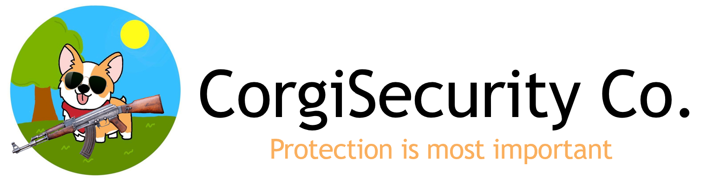
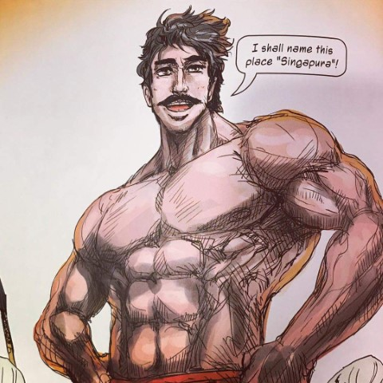
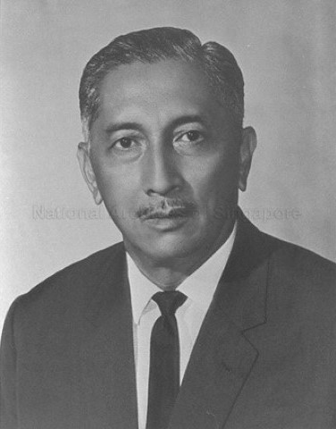

Corgitech History: Humble Beginnings
Founded in 2001, Corgitech has a reputation for premium quality and service.
Early Years
Our founders, Wang Jun Jie and Chen Jun Jie, were students in the prestigious ITE North before founding this company. Corgitech was then named the CORGI Security Company. The duo's intended to start a security firm after the September 12 terrorist attacks in Singapore. They envisioned a future where Singapore's Elites are protected from impoverished and savagous peasants. With a strong belief in the idea and principles of the organization, they decided to drop out of school and persue the business.
CorgiSecurity Co.
The CORGI Security Company was a private security business that provided security for VIPs. Its headquarters opened in Geylang and operations begun.

This was the logo/banner back then.
The business venture was very prosperous and generated a lot of wealth for the company. It had many high profile/valued clienteles:
|  |  | |
| Sir Stamford Raffles | Sang Nila Utama | Yusof Bin Ishak |
From Physical to Online Security
When there is success, failure always follows. The Covid-19 Pandemic resulted in a massive drop in profits due to the reduced need for personal security. Without cashflow, the company found themselves to be yet again at the brink of bankruptcy. At the same time, the new generation of company leaders took over; And they knew they had to move online. It was at this moment where the company CEO, Tan Jun Jie, came out with a brilliant idea to change the company's focus into supplying Online security through VPNs.
Commitment to Quality
Our previous clientele chose us for the premium and quality services that we provide. We are committed to maintaining that reputation with our current lines of products. We promise quality that not only rivals other products in the market, but also dominate them. We are a key innovator in the industry and will continue to innovate, building the future of online security.